markdown语法
All in one 一站式Hexo配置优化教程！
选择Hexo的理由？
优点
- 中文支持：Hexo创建者是台湾人Tommy Chen，对中文支持很友好！
- 开源：Hexo开源，方便学习和修改
- 开源生态丰富：Hexo生态非常完善，各种插件极其丰富！而且基本全部免费、开源！
- MarkDown友好：Hexo对Markdown支持非常完善，对比遍各种博客框架，hexo对Markdown支持最友好
- 方便部署：Hexo静态部署，不需要php,java之类的运行环境，方便各种部署环境，有很多免费的静态网页部署服务可用。不需要购买vps,就有各种免费的部署环境！最低0成本建立独立博客！
- Git管理：所有文章和源码可以使用Git管理备份，方便保存和维护
缺点
- 对于初学者需要花费时间学习和配置：Hexo 基于 Node.js 开发，因此需要一定的技术水平和时间去学习和配置环境及插件等使用，但网上各种教程极其丰富。
- 功能不如动态网站丰富：相比于动态网站，Hexo 可以实现的功能相对有限，例如用户登录、评论系统等功能尚需其他工具或服务支持。
- 不利于频繁更改内容：由于 Hexo 是生成静态文件的方式，因此如果需要频繁更新网站内容，则需要重新构建整个网站并重新部署，这可能导致网站维护成本较高。
- 需要服务器来托管静态文件：虽然 Hexo 生成的静态文件可以直接访问，但仍需要一个服务器供其托管和发布，这可能会带来一些成本。
写博客的重要性
立德、立功、立言“三不朽”
《左传》载曰：“太上有立德，其次有立功，其次有立言，虽久不废，此之谓不朽。”
纸上得来终觉浅，绝知此事要躬行！赶紧跟着教程自己做一个独立博客吧！
最终效果如下图所示！
- 本博客大量使用webp格式图片加速网络访问，请确保您的浏览器支持webp，使用最新版的Firefox，Edge,Chrome可以有最佳体验！
- 支持Work Service PWA离线访问。
- 新增另一种浅色/深色模式。大部分组件会实时切换浅色/深色模式！
- 背景随机图片随机切换，并区分黑暗模式图片！切换浅色/深色模式时，背景图会跟随实时
- 支持文章RSS订阅，并支持文章分类订阅。
- 新增文章阅读模式，代码框全屏
- 新增文章目录栏状态保存，文章刷新后目录状态依旧保存
- 新增看板娘文字功能提示，当鼠标移动到特定位置，看板娘将会给出特定的文字提示！
- footer 栏新增支持繁简转换
- 支持新博文订阅通知，右下角小铃铛点击订阅！ chrome用户可能由于网络原因链接不到Google的服务器而看不到这个小铃铛。edge 和 Firefox 用户可以正常订阅。
支持离线模式
service worker 实现的渐进式App，不仅可以离线浏览，还可以加速缓存访问！
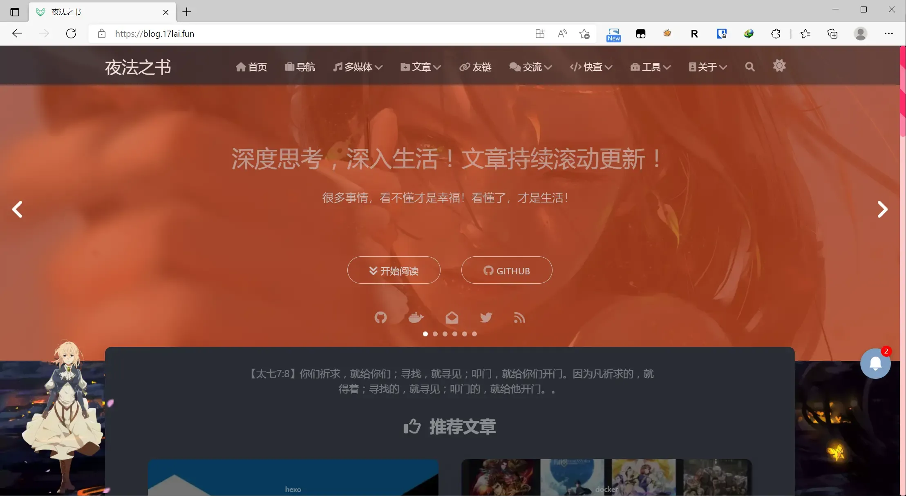
博客深色模式
深色模式，夜晚保护您的视力！
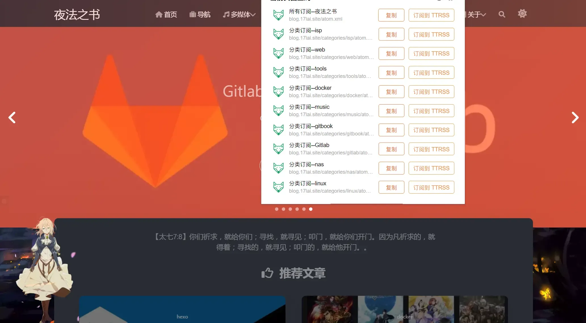
RSS订阅与文章分类订阅
RSS Hub 和 TTRSS 私有部署实现订阅。
配合浏览器扩展 RSSHub Radar (opens new window)和 移动端辅助 App RSSBud (opens new window)(iOS) 与 RSSAid (opens new window)(Android) 食用。
看板娘触发文字提示
- 对所有菜单和常用按钮做了文字功能提示。
- 支持看板娘模型切换，服装切换，某些模型还有语音互动！
- 看板娘还可以自定义时间提示，特殊节日提示等等。参考 Hexo博客个性定制篇中来完成吧。
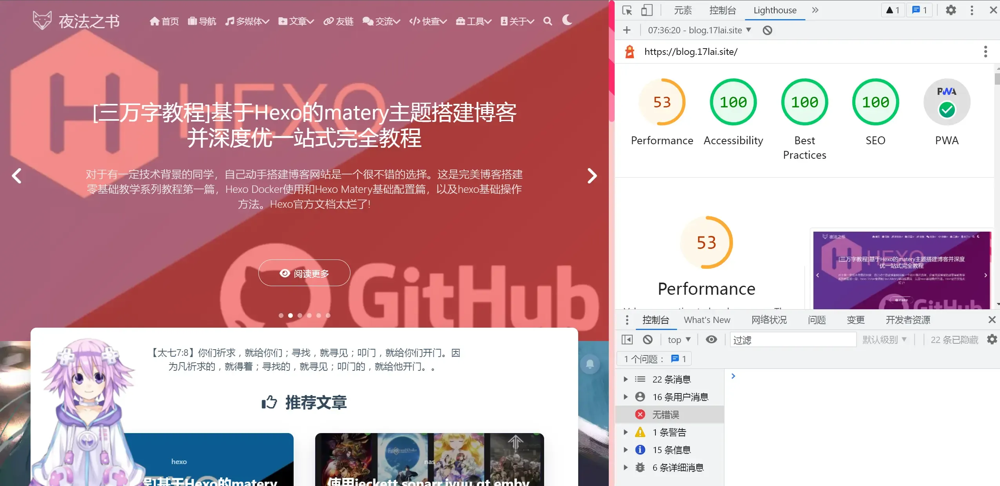
博客性能优化
经过多次优化，新版看板娘资源异步加载体积大拖累的性能分数。其它几乎都是满分了！
大量使用本地缓存，牺牲了第一次加载的体积，保证了第二次打开几乎都是使用缓存，异步加载对第一次渲染速度影响不大，但可以极大的提高第二次来自后续的访问速度！
本教程还有其它五大部分，更多内容请见Hexo系列教程
Hexo Docker环境使用篇
Docker 简介：
Docker 是一种轻量级的虚拟机环境，可以隔离主机的运行环境，内核公用主机的，运行库和环境是 Docker 私有的。运行 Docker 程序只比主机直接运行程序性能损失微乎其微。使用 Docker 你可以同时运行各种各样运行库环境而不用担心搞乱你的主机运行库环境！
Docker 运行负载远小于 Vmware 这类虚拟机， Vmware 需要模拟对应的CPU指令，再虚机运行一个虚拟机自己的内核，再这个虚拟机内核之上，再运行虚拟机的运行库和程序。比 Docker 多了一个内核模拟和运行，Cpu 和内存开销大增！
什么是 Docker？
Docker 是一个开源平台，支持开发人员构建、部署、运行、更新和管理容器，这些容器是标准化的可执行组件，结合了应用源代码以及在任何环境中运行该代码所需的操作系统 (OS) 库和依赖项。
容器简化了分布式应用的部署和交付过程。 随着组织转向云原生开发和混合多云环境，它们已变得越来越流行。 开发人员可以直接使用 Linux和其他操作系统中内置的功能，在没有 Docker 的情况下创建容器。 但 Docker 使容器化更加迅速、简便和安全。 截至本文撰写之时，Docker 报告称，已有超过 1300 万名开发人员在使用该平台（链接位于 ibm.com 外部）。
Docker 也指 Docker, Inc.（链接位于 ibm.com 外部），即销售 Docker 商业版本的企业，还可以是 Docker, Inc. 和许多其他组织和个人开展的 Docker 开源项目。
容器的工作原理
容器是通过 Linux 内核中内置的过程隔离和虚拟化功能来实现的。 控制组 (Cgroups) 用于为各进程分配资源，名称空间(namespace)用于限制进程访问或对其他资源或系统区域的可视性 ，这些功能支持多个应用组件共享主机操作系统的单个实例的资源，这与系统管理程序支持多台虚拟机 (VM) 共享单个硬件服务器的 CPU、内存和其他资源的方式大致相同。
容器的架构
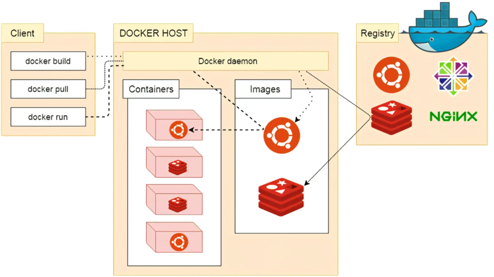
容器的架构
Docker 包括三个基本概念:
镜像（Image）：Docker 镜像（Image），就相当于是一个 root 文件系统。比如官方镜像 ubuntu:16.04 就包含了完整的一套 Ubuntu16.04 最小系统的 root 文件系统。容器（Container）：镜像（Image）和容器（Container）的关系，就像是面向对象程序设计中的类和实例一样，镜像是静态的定义，容器是镜像运行时的实体。容器可以被创建、启动、停止、删除、暂停等。仓库（Repository）：仓库可看成一个代码控制中心，用来保存镜像。
Docker的优势
因此，容器技术可提供虚拟机的所有功能和优势，包括应用隔离、经济高效的可扩展性和可处置性，以及其他重要的优势：
- 更轻巧：与虚拟机不同，容器不会承载整个操作系统实例和系统管理程序的有效负载。 它们仅包括执行代码所需的操作系统进程和依赖项。 容器大小以
兆字节为单位（某些虚拟机则是以千兆字节为单位）来衡量，因此它们可以更好地利用硬件容量，启动速度也更快。 - 提高了开发人员的工作效率：容器化应用可以
“一次编写，随处运行”。 与虚拟机相比，容器的部署、配置和重启过程更迅速且更简单。 这使得容器非常适合在持续集成和持续交付 (CI/CD)管道中使用，并且更适合采取敏捷和DevOps实践的开发团队。 - 提高了资源利用率：开发人员使用容器在硬件上运行的应用副本数量是使用虚拟机的
数倍。 这可以减少云支出。
为何使用 Docker？
Docker 如今非常受欢迎，甚至可以与“容器”一词互换使用。 而在 Docker 于 2013 年面世之前，第一批与容器相关的技术早已存在数年，甚至数十年（链接位于 IBM 外部）。
最值得注意的是，2008 年，Linux 内核中实现了 LinuXContainers (LXC)，LXC 完全支持单个 Linux 实例的虚拟化。 虽然目前仍在使用 LXC，但也提供了使用 Linux 内核的新技术。 现代的开源 Linux 操作系统 Ubuntu 也提供了此功能。
Docker 支持开发人员使用简单的命令访问这些本机容器化功能，并通过节省工作量的应用程序编程接口 (API) 自动执行。 与 LXC 相比，Docker 提供了以下功能：
- 增强的无缝容器
可移植性：虽然 LXC 容器通常引用特定于机器的配置，但 Docker 容器无需修改即可在任何桌面、数据中心和云环境中运行。 - 更轻巧且
更细粒度的更新：通过使用 LXC，可以在单个容器中组合多个进程。 这样就可以构建持续运行的应用，即使为了更新或修复而关闭某个部分也不例外。 自动化容器创建：Docker 可以基于应用源代码自动构建容器。容器版本控制：Docker 可以跟踪容器映像的版本，回滚到先前的版本，以及跟踪版本的构建者和构建方式。 它甚至可以只上传现有版本和新版本之间的增量。容器复用：现有容器可用作基本映像（本质上类似于用于构建新容器的模板）。共享容器库：开发人员可以访问包含数千个用户贡献容器的开源注册表。
如今，Docker 容器化也适用于 Microsoft Windows 和 Apple MacOS。 开发人员可以在任何操作系统上运行 Docker 容器，大多数领先的云提供商（包括 Amazon Web Services (AWS)、Microsoft Azure 和 IBM Cloud）都提供了一些专用服务，这些服务可帮助开发人员构建、部署和运行使用 Docker 进行容器化的应用。
Docker 版 hexo 环境一键部署
博主开源定制，推荐使用！省去您大量环境配置时间。
使用Hexo Docker之前需要Docker 环境，请参阅后文Docker安装方法
使用推荐Docker来搭配本文，阅读使用，将更省事，方便，快捷。hexo环境一键搞定！
Docker一键安装
bash
1 | |
hexo web 后台写作
基于 hexo-admin 实现，具体配置实现方法见后文。
最终效果如下图所示。
blog.17lai.fun访问blog， 添加后缀admin访问hexo后台。使用前面提到的 hexo docker ，启动运行 hexo docker 后，非自动安装 hexo-admin 以及常用插件，你也可以自定义安装你虚幻的插件，
vi /app/useRun.sh。
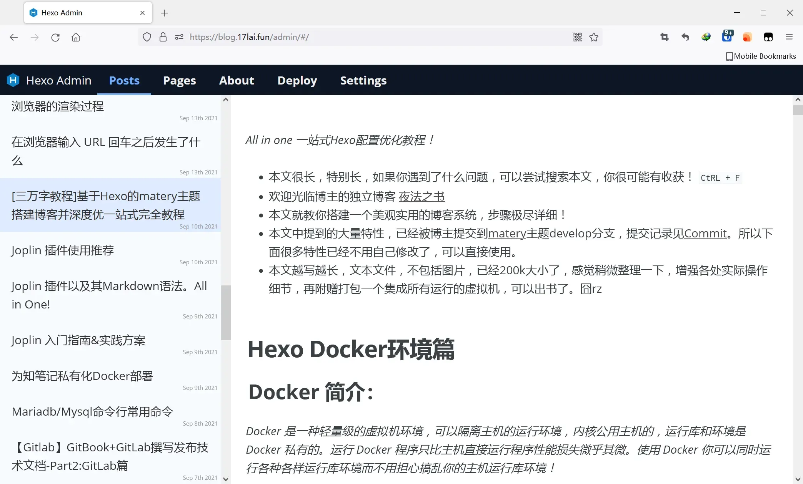
hexo-admin 主界面
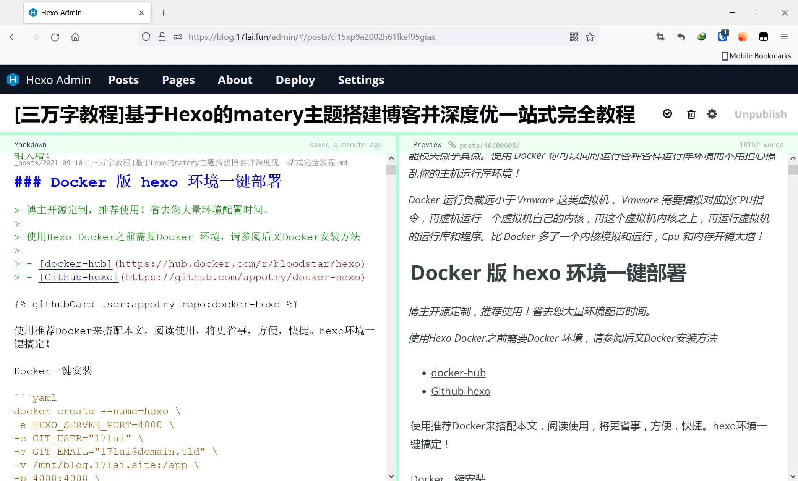
hexo-admin 编辑写作界面
配置 hexo-admin 根目录下_config.yml:
yaml
1 | |
配置 post metadata 根目录下_config.yml:
yaml
1 | |
hexon
Github: hexon
另一个hexo web 编辑界面，界面比hexo-admin更现代化。安装配置方法见Github
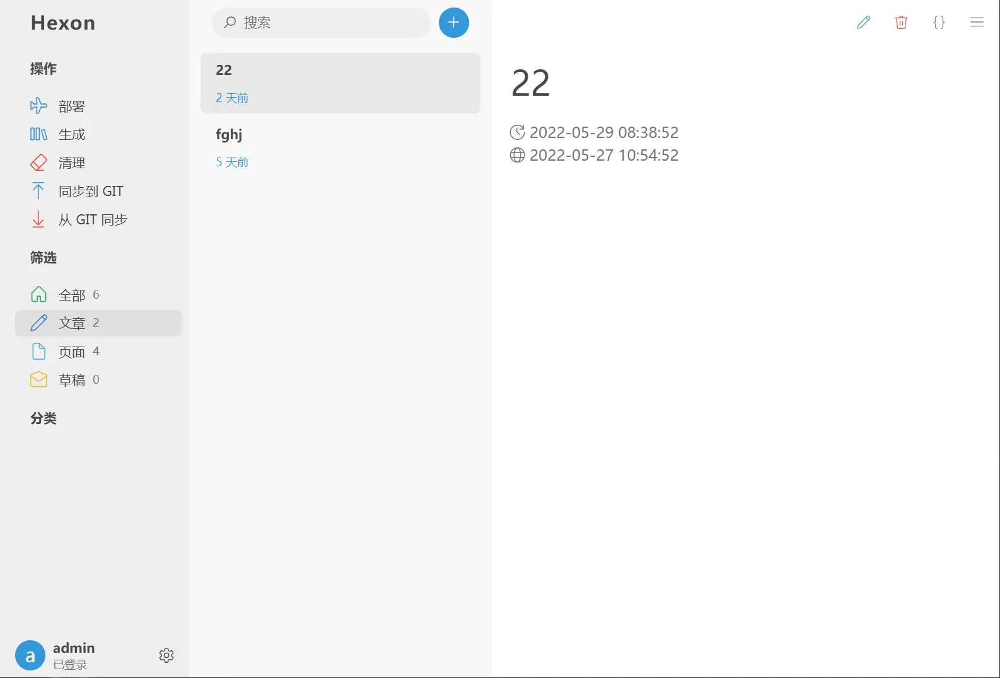
hexon
hexo-editor
又一个hexo web 编辑器
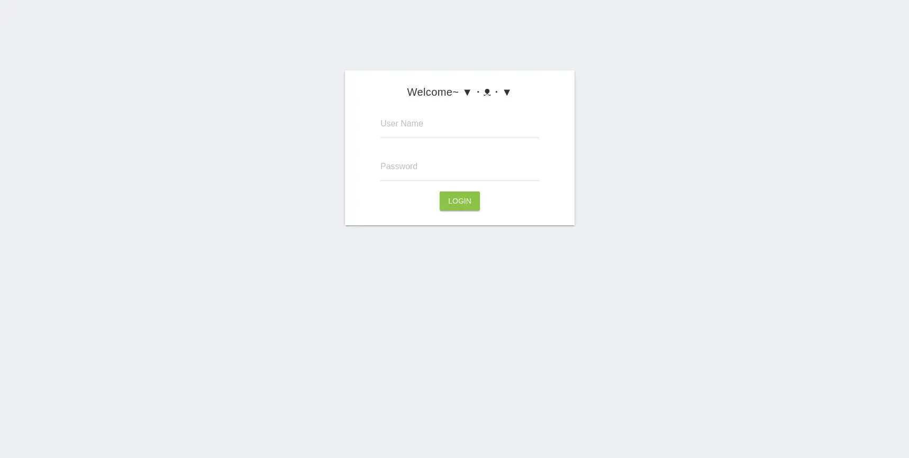
hexo editor 登录
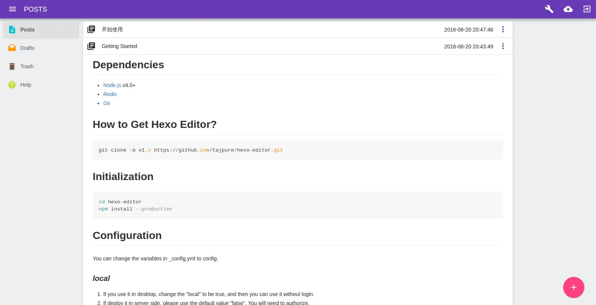
hexo editor 预览
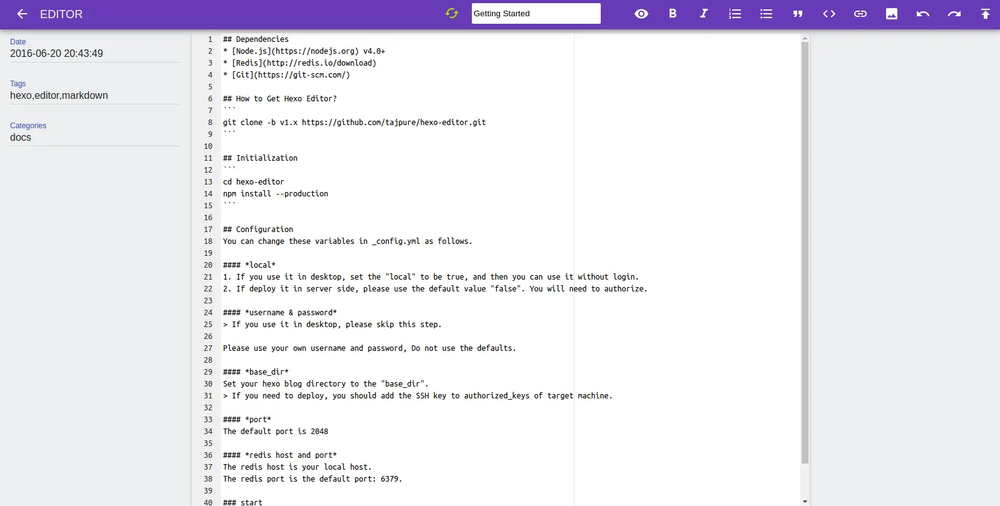
hexo editor 编辑
支持手机
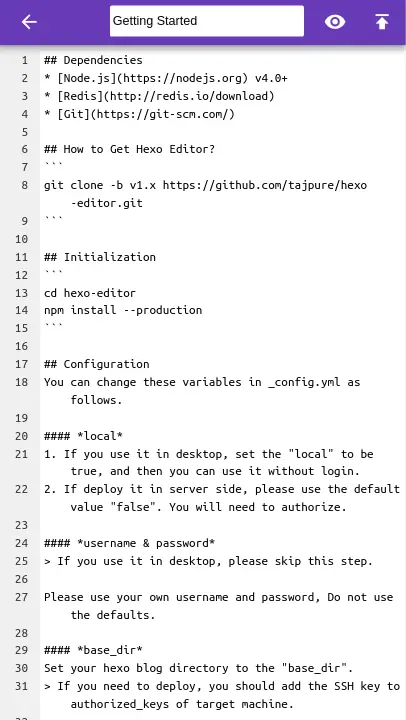
Qexo
A Quick, Powerful and Pretty Online Manager for Hexo.
类似项目
轻量级\多平台\开箱即用的hexo后端管理器
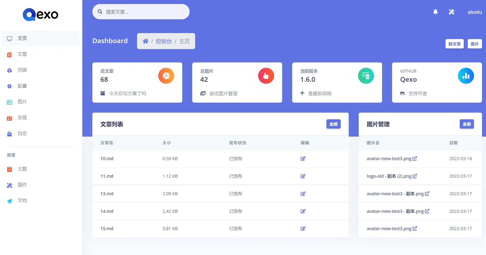
ssh key 部署
Docker会自动随机生成ssh key 在 /app/.ssh 目录下面。自动部署请把ssh key添加到github 等平台。
- 将SSH 公钥复制到剪贴板。 …
- 在任何页面的右上角，单击您的个人资料照片，然后单击Settings（设置）。
- 在用户设置侧边栏中，单击SSH and GPG keys（SSH 和GPG 密钥）。
- 单击New SSH key（新SSH 密钥）或Add SSH key（添加SSH 密钥）。
SSH 进入docker
bash
1 | |
然后就可以正常运行hexo的各种命令了，是不是非常简单？ 快来试试吧。
远程 SSH 访问Docker
推荐使用
SecurtCRT来远程访问你的Docker。
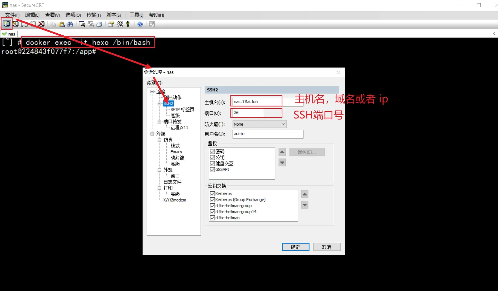
SecurtCRT
自定义用户自动运行脚本
用户可以在这里添加自动配置，自动安装插件，等各种启动docker运行的命令。
它将在Docker启动完成后自动调用运行！
bash
1 | |
反向代理 Hexo Docker
Nginx (engine x) 是一个高性能的HTTP和反向代理web服务器，同时也提供了IMAP/POP3/SMTP服务。
- 一些测试可能需要ssl支持，那么用nginx来反向代理一下，就可以在本地愉快的测试ssl加密功能了。
- 访问docker，需要
192.168.0.100:4000这样数字ip + 端口号的方式不觉得很丑陋，而且需要开大量的端口，使用nginx反向代理，可以直接使用域名访问。- 如果你想使用
blog.17lai.fun这样的域名访问你的 docker 里面运行的博客，请参考下文。
Nginx也使用docker来运行，blog.17lai.fun为本地域名，修改本地hosts dns信息来访问。
docker compose 配置
yaml
1 | |
nginx配置
文件 blog.conf ，配置文件放到${USERDIR}/nginx/conf.d目录中
nginx
1 | |
Windows DNS修改
windows hosts文件路径为： C:\Windows\System32\drivers\etc\HOSTS
管理员权限用文本编辑器打开这个文件并添加 192.168.0.100 blog.17lai.fun，然后，你就可以在本地浏览器中使用域名访问你的blog了！
Linux DNS 修改
Linux hosts 文件路径为： /etc/hosts
用文本编辑器或者命令行工具vim打开这个文件并添加 192.168.0.100 blog.17lai.fun，然后，你就可以在本地浏览器中使用域名访问你的blog了！
bash
1 | |
获取 SSL 证书
- 如果你购买了域名，可以在域名服务商获得免费的ssl证书。
- 自己生成私有证书，使用时需要给本地计算机，浏览器添加你自己的根证书，才能使你的ssl 证书在你自己的浏览器中生效。
使用Hexo Docker之前需要Docker 环境，下面是Docker 环境安装方法。
Centos 安装Docker
X86（一键安装脚本）：
bash
1 | |
Arm：
步骤1
bash
1 | |
步骤2
添加仓库
bash
1 | |
步骤3
安装Docker
bash
1 | |
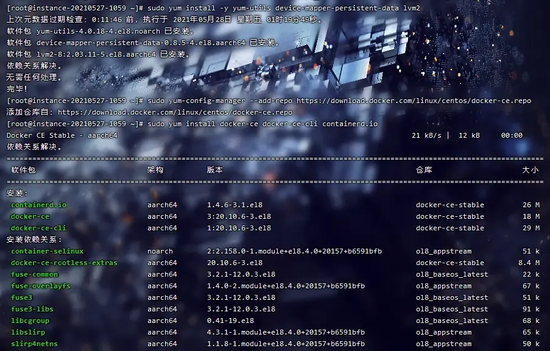
centos docker
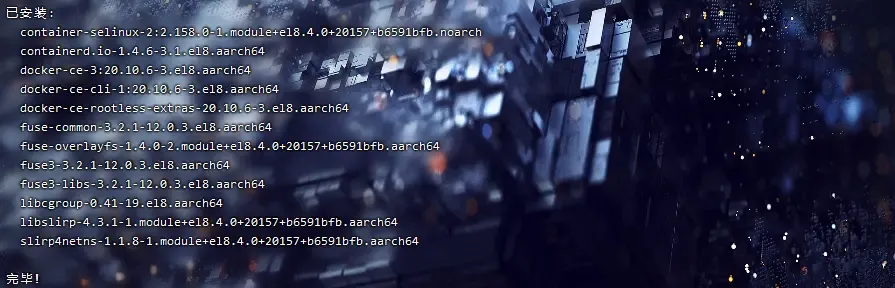
centos docker
完成安装
步骤4
启动Docker
bash
1 | |
QNAP 安装Docker
在系统应用的AppCenter中找到 Container Station，可以直接点击安装即可。
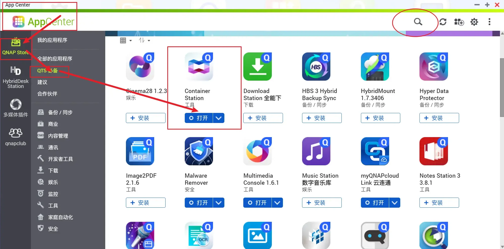
qnap docker
群晖 安装 Docker
首先要说的是，x86 平台的群晖才能用的上 Docker 套件，因此，ARM 架构平台的群晖只能说非常遗憾了。
打开套件中心，在 “所有套件” 中找到 Docker 并安装：
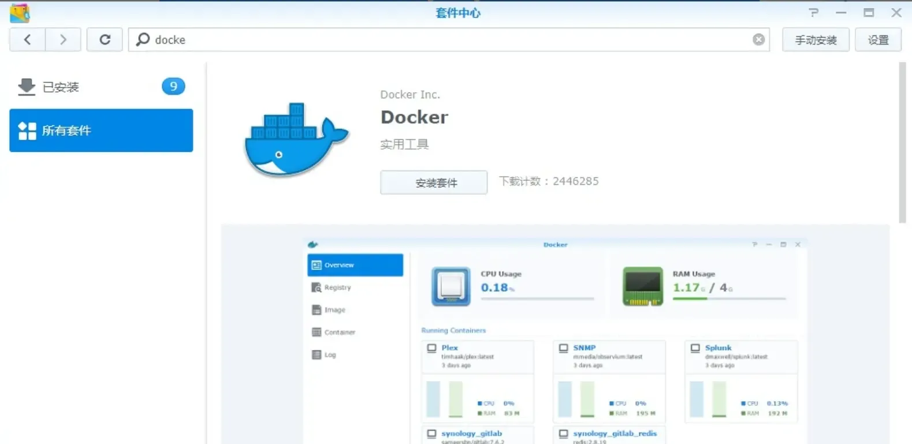
群晖 Docker
配置 docker 代理
最近 hub.docker.com 被屏蔽了，如是你需要下面设置
- Docker container 运行代理 Configure Docker to use a proxy server | Docker Docs
- Docker pull 代理设置 Configure the daemon with systemd | Docker Docs
Dockerd 代理
在执行docker pull时，是由守护进程dockerd来执行。因此，代理需要配在dockerd的环境中。而这个环境，则是受systemd所管控，因此实际是systemd的配置。
bash
1 | |
在这个proxy.conf文件（可以是任意*.conf的形式）中，添加以下内容：
ini
1 | |
Container 代理
在容器运行阶段，如果需要代理上网，则需要配置 ~/.docker/config.json。以下配置，只在Docker 17.07及以上版本生效。
json
1 | |
这个是用户级的配置，除了 proxies，docker login 等相关信息也会在其中。而且还可以配置信息展示的格式、插件参数等。
此外，容器的网络代理，也可以直接在其运行时通过 -e 注入 http_proxy 等环境变量。这两种方法分别适合不同场景。config.json 非常方便，默认在所有配置修改后启动的容器生效，适合个人开发环境。在CI/CD的自动构建环境、或者实际上线运行的环境中，这种方法就不太合适，用 -e 注入这种显式配置会更好，减轻对构建、部署环境的依赖。当然，在这些环境中，最好用良好的设计避免配置代理上网。
Docker Build 代理
虽然 docker build 的本质，也是启动一个容器，但是环境会略有不同，用户级配置无效。在构建时，需要注入 http_proxy 等参数。
bash
1 | |
注意：无论是 docker run 还是 docker build，默认是网络隔绝的。如果代理使用的是 localhost:3128 这类，则会无效。这类仅限本地的代理，必须加上 --network host 才能正常使用。而一般则需要配置代理的外部IP，而且代理本身要开启 Gateway 模式。
重启生效
代理配置完成后，reboot 重启当然可以生效，但不重启也行。
docker build 代理是在执行前设置的，所以修改后，下次执行立即生效。Container 代理的修改也是立即生效的，但是只针对以后启动的 Container，对已经启动的 Container 无效。
dockerd 代理的修改比较特殊，它实际上是改 systemd 的配置，因此需要重载 systemd 并重启 dockerd 才能生效。
bash
1 | |
官方示例
下面是来自 官方文档 的操作步骤和详细解释：
- 创建 dockerd 相关的 systemd 目录，这个目录下的配置将覆盖 dockerd 的默认配置
bash
1 | |
- 新建配置文件
/etc/systemd/system/docker.service.d/http-proxy.conf，这个文件中将包含环境变量
ini
1 | |
- 如果你自己建了私有的镜像仓库，需要 dockerd 绕过代理服务器直连，那么配置
NO_PROXY变量：
ini
1 | |
多个 NO_PROXY 变量的值用逗号分隔，而且可以使用通配符（*），极端情况下，如果 NO_PROXY=*，那么所有请求都将不通过代理服务器。
- 重新加载配置文件，重启 dockerd
bash
1 | |
- 检查确认环境变量已经正确配置：
bash
1 | |
- 从
docker info的结果中查看配置项。
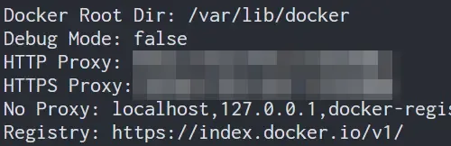
img
这样配置后，应该可以正常拉取 docker 镜像。
总结
提供一种生产环境可选方式
内网环境可以通过 sonatype 或者 harbor 搭建私有注册服务器，然后在私有注册服务上配置隧道代理，让私有注册服务通过隧道代理缓存外部镜像。这么做即可以减少容器运行时配置隧道代理复杂性，可以在后续使用中从本地私有注册服务中获取镜像，内网使用速度更快，而且可以保证本地镜像重用。
两种工具都提供多样的部署策略，如本地化部署，docker 方式，和 k8s 方式。
在部署复杂度方面， harbor 依赖 redis 和 postgres ，对于运维能力要求较高。sonatype 可以使用内嵌本地数据库，在部署时记得做好数据备份。
相关链接：
- docker ce install
- config docker proxy
- config docker registry mirror
- How to run “sudo apt-get update” through proxy in commandline?
- config containerd registry
方案组合：
- dockerhub –> proxy –> docker daemon
- dockerhub –> cloudflare –> docker daemon
- dockerhub –> cloudflare –> nexus-rm –> docker daemon
- dockerhub –> proxy –> nexus-rm –> docker daemon
- 其他组合
使用私服和不使用私服最大的区别就是是否在本地环境缓存一份远程镜像。在使用私服的情况下，即使断网或者代理不通，依然可以在内网环境继续使用已经缓存了的镜像，还有就是命中已经缓存的镜像在内网速度更快。
提供一种服务器快捷部署特定梯子的方式
xtls 是一个功能强大的代理软件，当你有代理服务时，可以通过容器化的方式在服务器部署客户端，供内网其他程序使用。
yaml
1 | |
最后建议大家在使用社区提供的镜像加速时，额外关注镜像安全方面的问题，尽可能使用可信的镜像，特别是在生产环境中。因为大多数使用 docker 都是以特权模式运行，在其他容器运行时环境中的特定需求中也会使用特权模式运行容器。如果容器存在漏洞后门，或者植入挖矿脚本，会带来风险性问题。
Qnap docker 代理配置
- 登录 nas ssh 命令行
sudo -i切换 admin 操作cd /share/CACHEDEV2_DATA/.qpkg/container-station/script
测试时container安装在/share/CACHEDEV2_DATA/，自己环境根据自己的路径修改
vi run-docker.sh
倒数第二行加入（改成自己的网段与端口）：
bash
1 | |

img
Reload Image
- 重启 container
bash
1 | |
Docker Hub 镜像加速器
国内从 Docker Hub 拉取镜像有时会遇到困难，此时可以配置镜像加速器。
Dockerized 实践 https://github.com/y0ngb1n/dockerized
国内的 Docker Hub 镜像加速器，由国内教育机构与各大云服务商提供的镜像加速服务 | Dockerized 实践 https://github.com/y0ngb1n/dockerized
Docker daemon 配置代理
自建镜像加速服务
国内三方加速镜像
⚠️⚠️⚠️ 自 2024-06-06 开始，国内的 Docker Hub 镜像加速器相继停止服务，可选择为 Docker daemon 配置代理或自建镜像加速服务。
Ubuntu 16.04+、Debian 8+、CentOS 7+
创建或修改 /etc/docker/daemon.json：
bash
1 | |
Docker Hub 镜像加速器列表
Docker 官方和国内很多云服务商都提供了国内加速器服务。以下镜像站来源于互联网（感谢热心网友），可能出现宕机、转内网、关停等情况，建议同时配置多个镜像源。
| 镜像加速器 | 镜像加速器地址 | 专属加速器？ | 其它加速？ |
|---|---|---|---|
| Docker 中国官方镜像 | https://registry.docker-cn.com |
Docker Hub（已关闭） | |
| DaoCloud 镜像站 | https://docker.m.daocloud.io |
Docker Hub、GCR、K8S、GHCR、Quay、NVCR 等 | |
| Azure 中国镜像 | https://dockerhub.azk8s.cn |
仅供内部访问 | Docker Hub、GCR、Quay |
| 科大镜像站 | https://docker.mirrors.ustc.edu.cn |
仅供内部访问 | Docker Hub、GCR、Quay |
| 阿里云 | https://<your_code>.mirror.aliyuncs.com |
需登录，系统分配 | Docker Hub |
| 七牛云 | https://reg-mirror.qiniu.com |
Docker Hub、GCR、Quay | |
| 网易云 | https://hub-mirror.c.163.com |
Docker Hub | |
| 腾讯云 | https://mirror.ccs.tencentyun.com |
仅供内部访问 | Docker Hub |
| Docker 镜像代理 | https://dockerproxy.com |
Docker Hub、GCR、K8S、GHCR | |
| 百度云 | https://mirror.baidubce.com |
Docker Hub | |
| 南京大学镜像站 | https://docker.nju.edu.cn |
Docker Hub、GCR、GHCR、Quay、NVCR 等 | |
| 上海交大镜像站 | https://docker.mirrors.sjtug.sjtu.edu.cn |
Docker Hub、GCR 等（已关闭） | |
| 中科院软件所镜像站 | https://mirror.iscas.ac.cn |
Docker Hub |
⚠️ 部分网友反馈以下镜像站存在未同步最新源镜像问题，请按需选用（评论区可考古）
- 阿里云
检查加速器是否生效
命令行执行 docker info，如果从结果中看到了如下内容，说明配置成功。
bash
1 | |
Docker Hub 镜像测速
使用镜像前后，可使用 time 统计所花费的总时间。测速前先移除本地的镜像！
bash
1 | |
Hexo入门篇
Hexo 通用简明教程
Hexo 是一个快速、简洁且高效的博客框架。Hexo 使用 Markdown（或其他渲染引擎）解析文章，在几秒内，即可利用靓丽的主题生成静态网页。
前提
安装 Hexo 相当简单，只需要先安装下列应用程序即可：
安装
所有必备的应用程序安装完成后，即可使用 npm 安装 Hexo。
bash
1 | |
安装以后，可以使用以下两种方式执行 Hexo：
npx hexo- 将 Hexo 所在的目录下的
node_modules添加到环境变量之中即可直接使用：hexo
bash
1 | |
升级
后期需要升级的化，进入 blog 目录，先检查更新:
bash
1 | |
修改 package.json 文件，基于 Latest 列内容更新版本号，然后更新并检查版本号：
bash
1 | |
建站
安装 Hexo 完成后，请执行下列命令，Hexo 将会在指定文件夹中新建所需要的文件。
bash
1 | |
启动网页服务
此时，通过 hexo s 命令即可在本地启动您的博客站点了。
bash
1 | |
接下来将安装主题，配置博客托管平台，实现一键发布并刷新 CDN 缓存。
npm下载加速
安装淘宝镜像， 加速NPM
bash
1 | |
安装CNPM
个人使用体验来说，
npm兼容性最好，如果你遇到某个包cnpm或者yarn安装失败，试试最原始的老婆吗，或许有奇效！
bash
1 | |
Hexo 日常操作命令
bash
1 | |
hexo 目录结构说明
在执行过Hexo deploy命令之后，目录结构新增了.deploy_git，public，.gitignore，如下：
bash
1 | |
_config.yml
用来配置博客相关的参数，初始化时自动创建。具体参数设置，可参照 Hexo 配置 文档。
node_modules 和 package.json
都是在初始化时自动创建。
node_modules用来存储已安装的各类依赖包。package.json用来查看 Hexo 的版本以及相关依赖包的版本。
Hexo 会默认安装：
- hexo：主程序
- hexo-deployer-git：实现 git 部署方式
- hexo-generator-archive：存档页面生成器
- hexo-generator-category：分类页面生成器
- hexo-generator-index：index 生成器
- hexo-generator-tag：标签页面生成器
- hexo-renderer-ejs：支持 EJS 渲染
- hexo-renderer-marked：Markdown 引擎
- hexo-renderer-stylus：支持 stylus 渲染
- hexo-server：支持本地预览，默认地址 localhost:4000
新安装的依赖包，也会保存在node_module文件夹下。
scaffold
模板文件夹，初始化时自动创建。包含page，post，draft三种模板，分别对应 页面、要发布的文章、草稿。
themes
主题文件夹，初始化时自动创建。每一个主题，都有一个单独的文件夹。默认主题为 landscape。
source ， public 和 .deploy_git
- source：资源文件夹。用来存放图片、Markdown 文档（文章、草稿）、各种页面（分类、关于页面等）。
- public：将 source 文件夹里的 Markdown 文档，转换成 index.html。再结合主题进行渲染，就是我们最终看到的博客。
- .deploy_git：将 public 文件夹的内容提交到 Github 后生成，内容与 public 文件夹基本一致。
这三者的关系大致是：source -> public -> .deploy_git
- 执行
hexo generate，根据 source，更新 public。 - 执行
hexo deploy，根据 public，更新 .deploy_git。
常用命令
指令说明
hexo server#启动本地服务器，用于预览主题。Hexo 会监视文件变动并自动更新，除修改站点配置文件外,无须重启服务器,直接刷新网页即可生效。hexo server -s#以静态模式启动hexo server -p 5000#更改访问端口 (默认端口为 4000，’ctrl + c’关闭 server)hexo server -i IP地址#自定义 IPhexo clean#清除缓存 ,网页正常情况下可以忽略此条命令,执行该指令后,会删掉站点根目录下的 public 文件夹hexo g#生成静态网页 (执行 $hexo g后会在站点根目录下生成 public 文件夹, hexo 会将”/blog/source/“ 下面的.md 后缀的文件编译为.html 后缀的文件,存放在”/blog/public/ “ 路径下)hexo d#自动生成网站静态文件，并将本地数据部署到设定的仓库(如 github)hexo init文件夹名称 #初始化 XX 文件夹名称npm update hexo -g#升级npm install hexo -g#安装node -v#查看 node.js 版本号npm -v#查看 npm 版本号git --version#查看 git 版本号hexo -v#查看 hexo 版本号- hexo new page “music” #新增页面music
- hexo new post “文章名称” #新增文章
简写指令
hexo n "我的第一篇文章"等价于hexo new "我的第一篇文章"还等价于hexo new post "我的第一篇文章"hexo p等价于hexo publishhexo g等价于hexo generatehexo s等价于hexo serverhexo d等价于hexo deployhexo g -d等价于hexo generate --deploy
注: hexo clean 没有 简写, git --version 没有简写
hexo版本升级
Docker`镜像直接提供最新版本`node`，`hexo
升级 Node
none
1 | |
升级 Hexo
none
1 | |
现在 Hexo 及插件已经升级成功，执行 hexo version 查看版本。
设置npm源的几种方式
原始源
txt
1 | |
方案: 使用nrm
- 安装
bash
1 | |
- 列出源的候选项
bash
1 | |
输出结果：
txt
1 | |
- 使用淘宝源
bash
1 | |
方案: 改变全局的注册
- 设置成淘宝源
bash
1 | |
- 查看结果
bash
1 | |
输出结果：
txt
1 | |
- 测试一下
bash
1 | |
方案: 在命令行里指定源
bash
1 | |
方案: 修改 ~/.npmrc
txt
1 | |
方案: 使用cnpm
bash
1 | |
Hexo基础配置篇
下载主题
hexo-theme-matery 是一个采用 Material Design 和响应式设计的 Hexo 博客主题，点击 这里 可以查看示例效果。点击 这里 下载 master 分支的最新稳定版的代码，解压缩后，将 hexo-theme-matery 的文件夹复制到 Hexo 的 themes 文件夹中即可。
Docker环境命令
bash
1 | |
切换主题
修改 Hexo 根目录下的 _config.yml 的 theme 的值：theme: hexo-theme-matery
_config.yml 文件的其它修改建议
- 请修改
_config.yml的url的值为你的网站主URL（如：http://xxx.github.io）。 - 建议修改两个
per_page的分页条数值为6的倍数，如：12、18等，这样文章列表在各个屏幕下都能较好的显示。 - 如果是中文用户，则建议修改
language的值为zh-CN。
在本主题的 _config.yml 中可以修改部分自定义信息，有以下几个部分：
- 菜单
- 我的梦想
- 首页的音乐播放器和视频播放器配置
- 是否显示推荐文章名称和按钮配置
favicon和Logo- 个人信息
- TOC 目录
- 文章打赏信息
- 复制文章内容时追加版权信息
- MathJax
- 文章字数统计、阅读时长
- 点击页面的’爱心’效果
- 我的项目
- 我的技能
- 我的相册
Gitalk、Gitment、Valine和disqus评论配置- 不蒜子统计和谷歌分析（
Google Analytics） - 默认特色图的集合。当文章没有设置特色图时，本主题会根据文章标题的
hashcode值取余，来选择展示对应的特色图
新建主题必备about、tags、404等页面
新建分类 categories 页
categories 页是用来展示所有分类的页面，如果 source 目录下还没有 categories/index.md 文件，那么就需要新建一个，命令如下：
bash
1 | |
编辑你刚刚新建的页面文件 /source/categories/index.md，至少需要以下内容：
yaml
1 | |
新建标签 tags 页
tags 页是用来展示所有标签的页面，如果 source 目录下还没有 tags/index.md 文件，那么就需要新建一个，命令如下：
bash
1 | |
编辑刚刚新建的页面文件 /source/tags/index.md，至少需要以下内容：
yaml
1 | |
新建留言板 contact 页
contact 页是用来展示留言板信息的页面，如果在你的博客 source 目录下还没有 contact/index.md 文件，那么你就需要新建一个，命令如下：
bash
1 | |
编辑你刚刚新建的页面文件 /source/contact/index.md，至少需要以下内容：
yaml
1 | |
注：本留言板功能依赖于第三方评论系统，请激活你的评论系统才有效果。并且在主题的
_config.yml文件中，第19至21行的“菜单”配置，取消关于留言板的注释即可。
新建友情链接 friends 页
friends 页是用来展示友情链接信息的页面，如果在你的博客 source 目录下还没有 friends/index.md 文件，那么你就需要新建一个，命令如下：
bash
1 | |
编辑你刚刚新建的页面文件 /source/friends/index.md，至少需要以下内容：
yaml
1 | |
同时，在你的博客 source 目录下新建 _data 目录，在 _data 目录中新建 friends.json 文件，文件内容如下所示：
json
1 | |
新建关于我 about 页
about 页是用来展示关于我和我的博客信息的页面，如果 source 目录下还没有 about/index.md 文件，那么就需要新建一个，命令如下：
bash
1 | |
编辑刚刚新建的页面文件 /source/about/index.md，至少需要以下内容：
yaml
1 | |
新建404页
新建一个404.md文件
在hexo的souce文件夹下创建一个404.md，之后输入如下内容：
markdown
1 | |
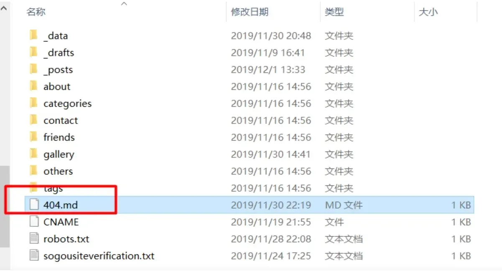
新建404.md
然后hexo g生成页面中就有404。只是页面较丑。
404页面美化
下载404特效
点击下载代码:点我去代码出处
移植
放入js文件到主题中
将下载的压缩包解压，会发现里面有两个js文件和一个html页面，重要的就是js文件，将文件移植到主题的source文件的libs文件夹下，需要自己创建一个文件夹，我给文件夹取的名字叫做404。
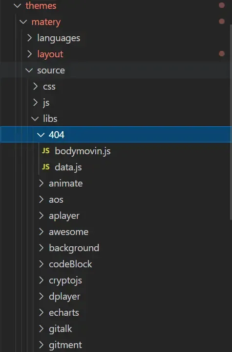
导入404 js
因为该主题的js文件都是写_config.yml文件里面的，为了规范，也需要将文件的路径写到该文件夹下
如下，之后导入js文件的时候就可以使用404bodymovin和404data来代替了
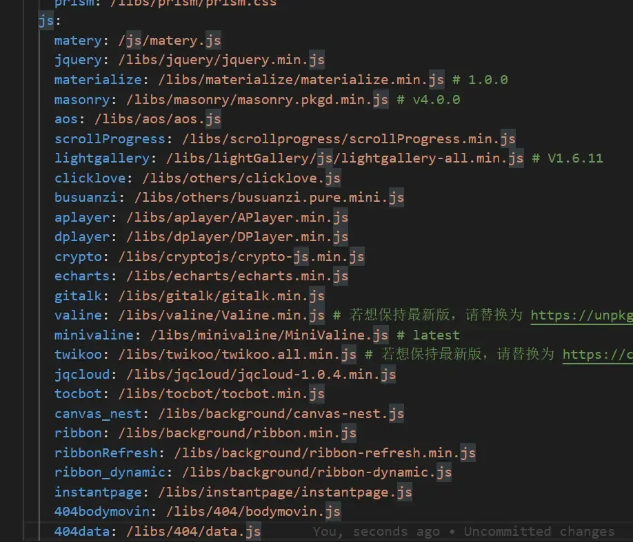
修改主题_config.yml文件
编辑404.esj
markup
1 | |
现在就移植成功了，使用下面命令上传，之后输入一个错误的页面就可以查看到了
none
1 | |
Tips: 不要再本地试验，本地的时候输入错误的页面不会显示404页面的。
新建友情连接 friends 页（可选的）
friends 页是用来展示友情连接信息的页面，如果 source 目录下还没有 friends/index.md 文件，那么就需要新建一个，命令如下：
bash
1 | |
编辑刚刚新建的页面文件 /source/friends/index.md，至少需要以下内容：
yaml
1 | |
同时，在 source 目录下新建 _data 目录，在 _data 目录中新建 friends.json 文件，文件内容如下所示：
json
1 | |
菜单导航配置
配置基本菜单导航的名称、路径url和图标icon.
- 1.菜单导航名称可以是中文也可以是英文(如：
Index或主页) - 2.图标icon 可以在Font Awesome 中查找
yaml
1 | |
二级菜单配置方法
如果你需要二级菜单则可以在原基本菜单导航的基础上如下操作
- 在需要添加二级菜单的一级菜单下添加
children关键字(如:About菜单下添加children) - 在
children下创建二级菜单的 名称name,路径url和图标icon. - 注意每个二级菜单模块前要加
-. - 注意缩进格式
yaml
1 | |
文章 Front-matter 介绍
Front-matter 选项详解
Front-matter 选项中的所有内容均为非必填的。但仍然建议至少填写 title 和 date 的值。
| 配置选项 | 默认值 | 描述 |
|---|---|---|
| title | Markdown 的文件标题 |
文章标题，强烈建议填写此选项 |
| date | 文件创建时的日期时间 | 发布时间，强烈建议填写此选项，且最好保证全局唯一 |
| author | 根 _config.yml 中的 author |
文章作者 |
| img | featureImages 中的某个值 |
文章特征图，推荐使用图床(腾讯云、七牛云、又拍云等)来做图片的路径.如: http://xxx.com/xxx.jpg |
| top | true |
推荐文章（文章是否置顶），如果 top 值为 true，则会作为首页推荐文章 |
| hide | false |
隐藏文章，如果hide值为true，则文章不会在首页显示 |
| cover | false |
v1.0.2版本新增，表示该文章是否需要加入到首页轮播封面中 |
| coverImg | 无 | v1.0.2版本新增，表示该文章在首页轮播封面需要显示的图片路径，如果没有，则默认使用文章的特色图片 |
| password | 无 | 文章阅读密码，如果要对文章设置阅读验证密码的话，就可以设置 password 的值，该值必须是用 SHA256 加密后的密码，防止被他人识破。前提是在主题的 config.yml 中激活了 verifyPassword 选项 |
| toc | true |
是否开启 TOC，可以针对某篇文章单独关闭 TOC 的功能。前提是在主题的 config.yml 中激活了 toc 选项 |
| mathjax | false |
是否开启数学公式支持 ，本文章是否开启 mathjax，且需要在主题的 _config.yml 文件中也需要开启才行 |
| summary | 无 | 文章摘要，自定义的文章摘要内容，如果这个属性有值，文章卡片摘要就显示这段文字，否则程序会自动截取文章的部分内容作为摘要 |
| categories | 无 | 文章分类，本主题的分类表示宏观上大的分类，只建议一篇文章一个分类 |
| tags | 无 | 文章标签，一篇文章可以多个标签 |
| keywords | 文章标题 | 文章关键字，SEO 时需要 |
| reprintPolicy | cc_by | 文章转载规则， 可以是 cc_by, cc_by_nd, cc_by_sa, cc_by_nc, cc_by_nc_nd, cc_by_nc_sa, cc0, noreprint 或 pay 中的一个 |
注意:
以下为文章的 Front-matter 示例。
最简示例
yaml
1 | |
最全示例
yaml
1 | |
新建文章模板修改
首先为了新建文章方便，我们可以修改一下文章模板，建议将/scaffolds/post.md修改为如下代码：
yaml
1 | |
这样新建文章后 一些Front-matter参数不用你自己补充了，修改对应信息就可以了。
代码高亮
从 Hexo5.0 版本开始自带了 prismjs 代码语法高亮的支持，本主题对此进行了改造支持。
如果你的博客中曾经安装过 hexo-prism-plugin 的插件，那么你须要执行 npm uninstall hexo-prism-plugin 来卸载掉它，否则生成的代码中会有 { 和 } 的转义字符。
然后，修改 Hexo 根目录下 _config.yml 文件中 highlight.enable 的值为 false，并将 prismjs.enable 的值设置为 true，主要配置如下：
yaml
1 | |
主题中默认的 prismjs 主题是 Tomorrow Night，如果你想定制自己的主题，可以前往 prismjs 下载页面 定制下载自己喜欢的主题 css 文件，然后将此 css 主题文件取名为 prism.css，替换掉 hexo-theme-matery 主题文件夹中的 source/libs/prism/prism.css 文件即可。
添加文章搜索功能
- 这个插件比广大教程提到的
hexo-generator-search插件更加强大和好用！- matery目前只支持
search.xmlxml格式的搜索文件！
本主题中还使用到了 hexo-generator-searchdb 的 Hexo 插件来做内容搜索，安装命令如下：
bash
1 | |
在 Hexo 根目录下的 _config.yml 文件中，新增以下的配置项：
yaml
1 | |
参数含义
- path - file path. By default is
search.xml. If the file extension is.json, the output format will be JSON. Otherwise XML format file will be exported. - field
- the search scope you want to search, you can chose:
- post (Default) - will only cover all the posts of your blog.
- page - will only cover all the pages of your blog.
- all - will cover all the posts and pages of your blog.
- content - whether contains the whole content of each article. If
false, the generated results only cover title and other meta info without mainbody. By default istrue. - format
- the form of the page contents, options are:
- html (Default) - original html string being minified.
- striptags - original html string being minified, and remove all the tags.
- raw - markdown text of each posts or pages.
修改页脚
页脚信息可能需要做定制化修改，而且它不便于做成配置信息，所以可能需要你自己去再修改和加工。修改的地方在主题文件的 /layout/_partial/footer.ejs 文件中，包括站点、使用的主题、访问量等。
修改社交链接
在主题的 _config.yml 文件中，默认支持 QQ、GitHub 和邮箱的配置，可以在主题文件的 /layout/_partial/social-link.ejs 文件中，新增、修改需要的社交链接地址，增加链接可参考如下代码：
markup
1 | |
其中，社交图标（如：fa-github）可以在 Font Awesome 中搜索找到。以下是常用社交图标的标识，供参考：
- Facebook:
fa-facebook - Twitter:
fa-twitter - Google-plus:
fa-google-plus - Linkedin:
fa-linkedin - Tumblr:
fa-tumblr - Medium:
fa-medium - Slack:
fa-slack - 新浪微博:
fa-weibo - 微信:
fa-wechat - QQ:
fa-qq
修改打赏的二维码图片
在主题文件的 source/medias/reward 文件中，可以替换成你的的微信和支付宝的打赏二维码图片。
配置音乐播放器
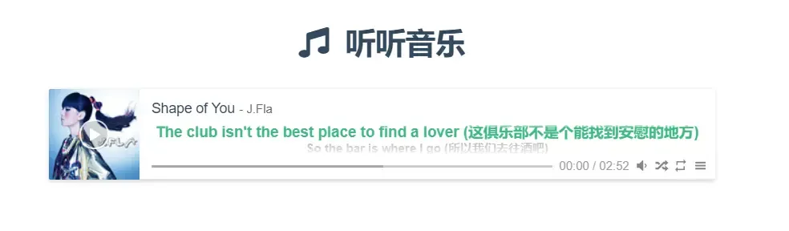
matery music config
支持接入第三方音乐，如 QQ 音乐，网易云音乐，酷狗音乐等等
主题的 _config.yml 配置文件中激活 music 配置即可：
yaml
1 | |
server 可选 netease（网易云音乐），tencent（QQ 音乐），kugou（酷狗音乐），xiami（虾米音乐），
baidu（百度音乐）。
type 可选 song（歌曲），playlist（歌单），album（专辑），search（搜索关键字），artist（歌手）
id 获取示例：浏览器打开网易云音乐，点击我喜欢的音乐歌单，地址栏有一串数字，playlist 的 id 即为这串数字。
单独的音乐页面
效果如下：
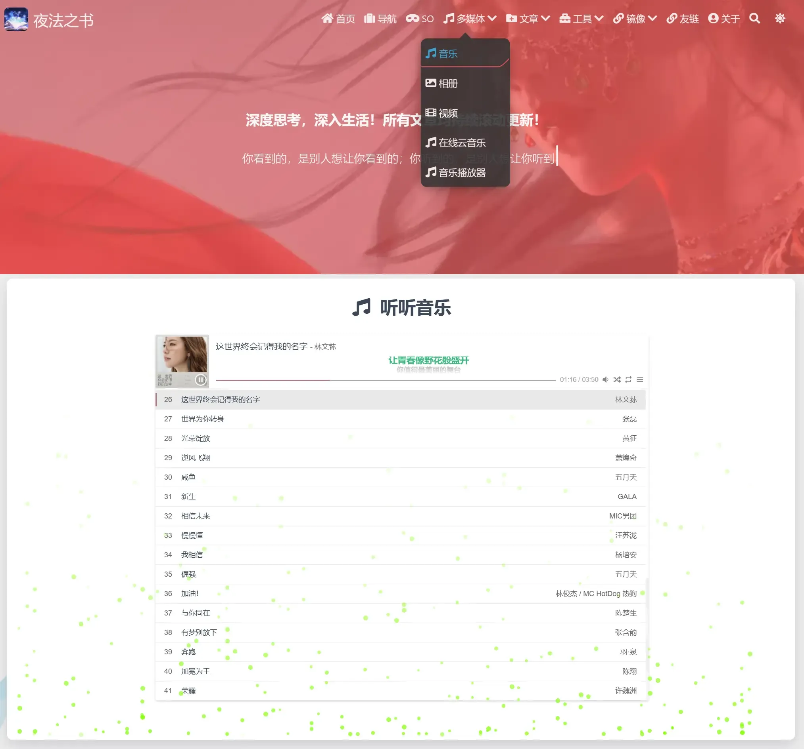
matery musics config
yaml
1 | |
开启配置方法如上，和 Matery 的音乐播放器配置参数差不多一样
server 可选 netease（网易云音乐），tencent（QQ 音乐），kugou（酷狗音乐），xiami（虾米音乐），
baidu（百度音乐）。
type 可选 song（歌曲），playlist（歌单），album（专辑），search（搜索关键字），artist（歌手）
id 获取示例：浏览器打开网易云音乐，点击我喜欢的音乐歌单，地址栏有一串数字，playlist 的 id 即为这串数字。
bash
1 | |
配置文章基本信息
yaml
1 | |
配置代码高亮及样式
从 Hexo5.0 版本开始自带了 prismjs 代码语法高亮的支持，本主题对此进行了改造支持。
如果你的博客中曾经安装过 hexo-prism-plugin 的插件，那么你须要执行 npm uninstall hexo-prism-plugin 来卸载掉它，否则生成的代码中会有 { 和 } 的转义字符。
然后，修改 Hexo 根目录下 _config.yml 文件中 highlight.enable 的值为 false，并将 prismjs.enable 的值设置为 true，主要配置如下：
yaml
1 | |
Hexo 内建的 PrismJS 支持浏览器端高亮（preprocess 设置为 false）和服务器端高亮（preprocess 设置为 true）两种方式。
使用服务器端高亮时（preprocess 设置为 true），只需要在站点引入 Prismjs 的主题（CSS 样式表）即可；而使用浏览器端高亮时（preprocess 设置为 false），需要将 JavaScript 文件也引入。
主题中默认的 prismjs 主题是 Tomorrow Night，如果你想定制自己的主题，可以前往 prismjs 下载页面 定制下载自己喜欢的主题 css 文件，然后将此 css 主题文件取名为 prism.css，替换掉 hexo-theme-matery 主题文件夹中的 source/libs/prism/prism.css 文件即可。
配置代码的样式
yaml
1 | |
配置是否启用转载限制模块
YAML
1 | |
文章转载规则，可以是 cc_by, cc_by_nd, cc_by_sa, cc_by_nc, cc_by_nc_nd, cc_by_nc_sa, cc0, noreprint 或 pay 中的一个
配置文章阅读密码功能
阅读文章的密码验证功能，如要使用此功能请激活该配置项，并在对应文章的 Front-matter 中写上 password 的键和加密后的密文即可。
请注意：为了保证密码原文不会被泄露到网页中，文章的密码必须是通过
SHA256加密的，这样就不会被破解。
yaml
1 | |
如何一键部署hexo
通过 hexo-deployer-git 插件可以实现一键将博客同时部署到多个 git 仓库中。如同时发布到 github 及 gitee 提供的 pages 服务。安装：
bash
1 | |
修改 Hexo 根目录下的 _config.yml 文件中的如下内容:
yaml
1 | |
也可以如本站一样，采用 hexo-deployer-cos-enhanced 插件将静态内容部署到腾讯云对象存储服务中，在 DNS 配置中将境内线路解析到腾讯云 CDN 地址，实现加速。部署完成后会自动刷新被更新文件的 CDN 缓存。
安装：
bash
1 | |
_config.yml 配置如下:
yaml
1 | |
然后通过 hexo g -d 即可实现一键发布，并更新 CDN 缓存。
文章链接转静态短地址（可选的）
如果文章名称是中文的，那么 Hexo 默认生成的永久链接也会有中文，这样不利于 SEO，且 gitment 评论对中文链接也不支持。我们可以用 hexo-permalink-pinyin Hexo 插件生成文章时生成中文拼音的永久链接，或者用hexo-abbrlink 生成静态文章链接。以下结合 hexo-abbrlink 生成类似 /yyyy/mmdd+随机数.html 的文章链接地址。
安装命令如下：
bash
1 | |
npm下载太慢怎么办？ 修改国内淘宝源加速，戳
在 Hexo 根目录下的 _config.yml 文件中，修改 permalink: ，并在文件末尾新增 abbrlink:配置项：
yaml
1 | |
添加 emoji 表情支持（可选的）
Matery主题新增了对 emoji 表情的支持，使用到了 hexo-filter-github-emojis 的 Hexo 插件来支持 emoji 表情的生成，把对应的 markdown emoji 语法（::, 例如：:smile:）转变成会跳跃的 emoji 表情，安装命令如下
bash
1 | |
- npm下载太慢怎么办？ 修改国内淘宝源加速，戳
在 博客根目录下的 _config.yml 文件中，新增以下的配置项：
yaml
1 | |
执行 hexo clean && hexo g 重新生成博客文件，然后就可以在文章中对应位置看到你用 emoji 语法写的表情了。
文章字数统计插件
如果你想要在文章中显示文章字数、阅读时长信息，可以安装 hexo-wordcount插件。
安装命令如下：
bash
1 | |
然后只需在本主题下的 _config.yml 文件中，激活以下配置项即可：
yaml
1 | |
添加 RSS 订阅支持
本主题中还使用到了 hexo-generator-feed 的 Hexo 插件来做 RSS，安装命令如下：
bash
1 | |
在 Hexo 根目录下的 _config.yml 文件中，新增以下的配置项：
yaml
1 | |
执行 hexo clean && hexo g 重新生成博客文件，然后在 public 文件夹中即可看到 atom.xml 文件，说明已经安装成功了。
hexo-feed 这个RSS插件更加强大，支持分类订阅，标签订阅。但对hexo 6.x没有做支持，虽然在hexo6.x上面工作正常。
增加百度统计功能
首先注册百度统计站长版，登陆后点击 新增网站，然后直接输入你的博客地址例如： https://blog.17lai.site，网站域名 和 网站首页 都写这个，网站名称 可以填 我的博客，
行业类别： 博客—空间周边。
然后点击左侧菜单的 代码获取，找到
javascript
1 | |
问号后的这一段十六进制代码
复制下来，粘贴到 主题配置文件 中的baidu_analytics:后面，注意冒号和值之间要有一个空格，然后将该字段前面的#号删除代表启用此功能。保存后即可
yaml
1 | |
Leancloud+Valine打造Hexo个人博客极简评论系统
Leancloud配置
首先访问Leancloud官网https://leancloud.cn/
有Github账号的小伙伴可以用Github账号进行登陆然后绑定邮箱就可以啦！
进入之后点击创建应用
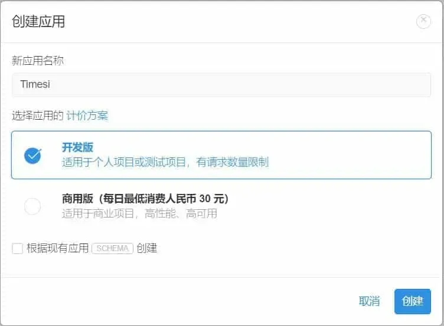
这样我们就创建好啦！
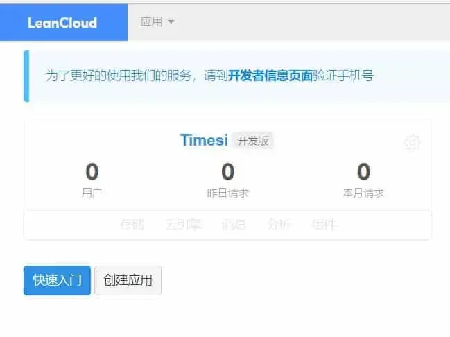
接着点击应用右上角的设置进入设置界面
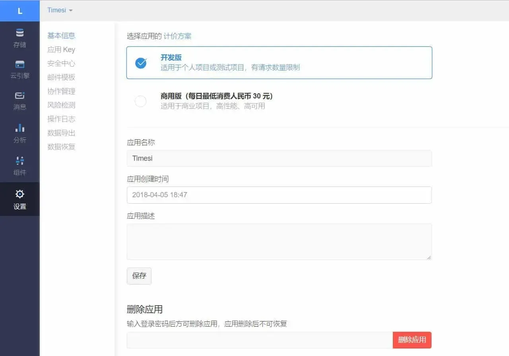
选择应用key，这样就可以看到我们接下来需要使用到的key
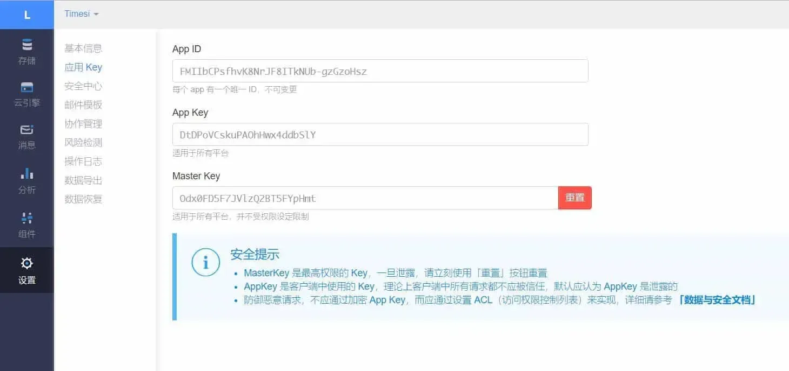
接着进入应用中心绑定你的个人博客域名
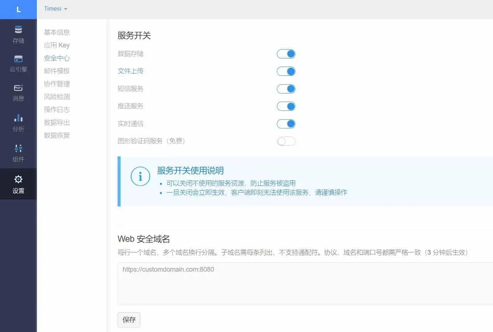
Valine配置
然后我们去主题配置文件中进行修改
主题配置文件路径：matery_config.yml
找到以下参数进行修改
yaml
1 | |
PS：评论者头像可以进行如下设置
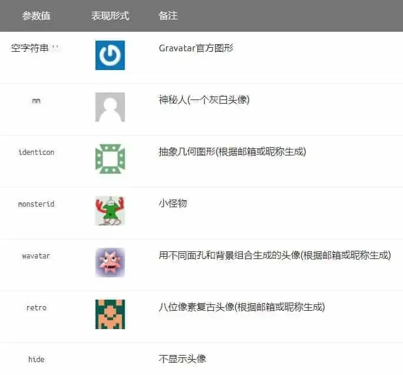
到此，一个极简评论系统就完成啦！
本教程还有其它五大部分，更多内容请见Hexo系列教程
系列教程
Hexo系列
[三万字教程]基于Hexo的matery主题搭建博客并深度优化完全一站式教程
- Hexo Docker环境与Hexo基础配置篇
- hexo博客自定义修改篇
- hexo博客网络优化篇
- hexo博客增强部署篇
- hexo博客个性定制篇
- hexo博客常见问题篇
- hexo博客博文撰写篇之完美笔记大攻略终极完全版
- Hexo Markdown以及各种插件功能测试
- markdown 各种其它语法插件，latex公式支持，mermaid图表，plant uml图表，URL卡片，bilibili卡片，github卡片，豆瓣卡片，插入音乐和视频，插入脑图，插入PDF，嵌入iframe
- 在 Hexo 博客中插入 ECharts 动态图表
- 使用nodeppt给hexo博客嵌入PPT演示
- GithubProfile美化与自动获取RSS文章教程
- Vercel部署高级用法教程
- webhook部署Hexo静态博客指南
- 在宝塔VPS上面采用docker部署waline全流程图解教程
Docker系列
- Docker使用简明教程
- 使用jeckett,sonarr,iyuu,qt,emby打造全自动追剧流程
- 为知笔记私有化Docker部署
- Earthly 一个更加强大的镜像构建工具
- 使用 Shell 脚本实现一个简单 Docker
- 如何使用Traefik V2 在Ubuntu20.04 上面来做 Dockers
- 通过IPV6访问Qnap NAS中Docker的服务
笔记系列
- 完美笔记进化论
- hexo博客博文撰写篇之完美笔记大攻略终极完全版
- Joplin入门指南&实践方案
- 替代Evernote免费开源笔记Joplin-网盘同步笔记历史版本Markdown可视化
- Joplin 插件以及其Markdown语法。All in One!
- Joplin 插件使用推荐
- 为知笔记私有化Docker部署
Gitbook使用系列
- GitBook+GitLab撰写发布技术文档-Part1:GitBook篇
- GitBook+GitLab撰写发布技术文档-Part2:GitLab篇
- 自己动手制作电子书的最佳方式（支持PDF、ePub、mobi等格式）
Gitlab 使用系列
来源: 夜法之书
作者: 夜法之书
文章链接: https://blog.17lai.site/posts/40300608/#Hexo%E5%85%A5%E9%97%A8%E7%AF%87
本文章著作权归作者所有，任何形式的转载都请注明出处。